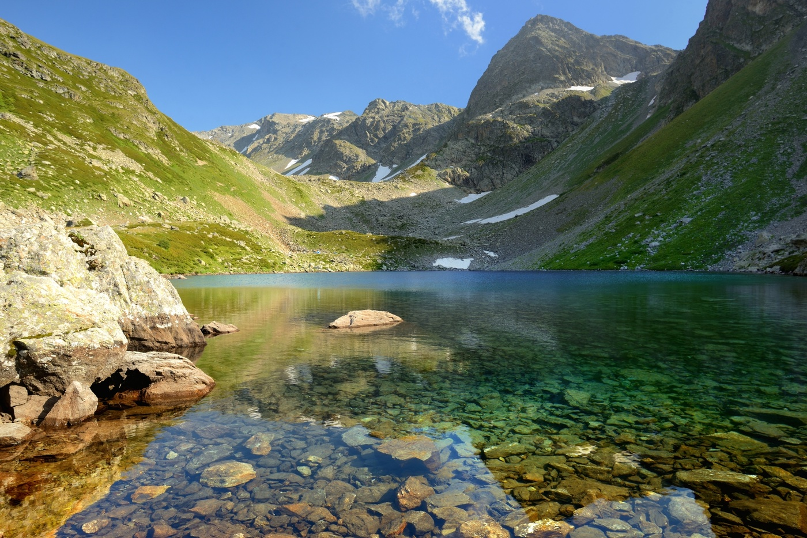

Простенький походик
День 1. Утром выезжаем из Ставрополя. Обедаем уже в Архызе. Смотрим достопримечательности. Едем через пос. Романтик до р. Дукка. Ищем нормальную полянку, ставим там лагерь. Шашлык и все дела...
День 2. Сегодня - акклиматизация. Оставляем дежурных и желающих выспаться в лагере и идем на Дуккинские озера. Без рюкзаков - нормально. Озеро Рыбка длинненькое, озеро Аркасарское - здоровенное, а озеро Сказка Кавказа - насколько хватит дури. Возвращаемся обратно в базовый лагерь.
День 3. Утром встаем пораньше, завтракаем, собираемся и чапаем с рюкзаками до Семицветного озера. Почему Семицветное? Просто в нем отражаются небо, облака, скалы, травы, цветы и при солнечной погоде и легком ветерке, все это начинает переливаться как калейдоскоп. Скорее всего, там и заночуем. Но, есть возможность подняться еще немного выше, чтобы посмотреть на это чудо с высоты, и немного облегчить завтрашний день.
День 4. Наверно, самый тяжелый день похода. Но никто и не думает о сложности, из-за сногсшибательных красот. Идем на перевал Аюлю (по русски, Медвежий). Проходим еще несколько разных озер, в некоторых купаемся, смывая пот тяжелого похода. На спуске - Белореченское озеро.
День 5. Вниз, вниз и вниз. Там внизу нас ждет цивилизация, сначала в виде ларька с пивом и чебуреками (хычинами), а потом в виде поляны Таулу, где есть все что нужно усталому путнику, баня, магазины и все такое...
День 6. Высыпаемся, отъедаемся, покупаем сувениры, обмениваемся контактами со слезами на глазах. К обеду едем в Ставрополь. Вот и все.